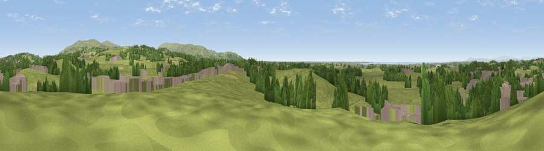

Viewpoint near Galgate
#19010 in England · top 62% of its area beats it · near Galgate · footpathWhere it is
The exact computed spot (SD 48525 54925). Click the marker for map links.
Public access: a public right of way passes within 35 m of this spot. Computed from Natural England's CRoW access layer and OpenStreetMap rights of way — not the legal definitive map. Always verify locally.
The view, rendered

A 360° render of this exact spot computed from the terrain model, tree cover and land cover — summer colours, afternoon light, calibrated against photographs of famous viewpoints. Real trees, hedges and buildings will differ in detail.
The panorama
Grey silhouette: terrain skyline in each direction (720 bearings, Earth curvature and refraction included). Dashed green: skyline with trees (+15 m) and buildings (+8 m) as obstacles. Blue strip: how far the ground is visible on each bearing.
Where the view opens
Wedge length = distance to the farthest visible ground on that bearing (vegetation-aware). Rings at 10, 25 and 50 km.
What fills the view
74% grassland · 15% woodland · 8% built-up · 2% cropland ·
Angular shares of the visible panorama (visual magnitude), not map area. Landscape diversity 0.37 (0–1 Shannon).
Key numbers
More beautiful places nearby
The staircase of upgrades: each row has a higher view potential than everything closer. Driving times are estimates from straight-line distance, calibrated against real road routing — check an actual route before setting out.
| Place | Direction | Drive | Score |
|---|---|---|---|
| Viewpoint near Forton | SSE · 4 km | ~9 min | 53.6 |
| Viewpoint near Aldcliffe | NNW · 4 km | ~10 min | 60.5 |
| Viewpoint near Quernmore | NE · 4 km | ~10 min | 68.5 |
| Viewpoint near Bailrigg | NNE · 5 km | ~10 min | 74.4 |
| Viewpoint near Scorton | SE · 7 km | ~14 min | 75.0 |
| Viewpoint near Scorton | SSE · 7 km | ~15 min | 76.6 |
| Viewpoint near Scorton | SSE · 7 km | ~15 min | 79.9 |
| Warton Crag | N · 18 km | ~31 min | 83.2 |
53.98779, -2.78653 · source: screening · position refined by local search. Computed location — check access rights before visiting.